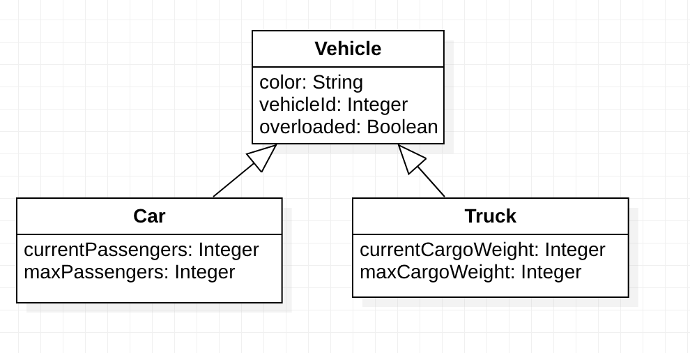

Kogito Rules (Drools) with Java Inheritance
Comparison of a JSON array based approach vs Jackson Inheritance Annotations
Introduction:
“Kogito is a next generation business automation toolkit that originates from well known Open Source projects Drools (for business rules) and jBPM (for business processes). Kogito aims at providing another approach to business automation where the main message is to expose your business knowledge (processes, rules and decisions) in a domain specific way.” (4)
Kogito rules services can reason over application domain model facts that are represented using “plain old Java objects” (POJO’s). The POJO’s can be used in DRL rules files and additionally the POJO’s may be used by the client applications that call the Kogito rules services. The communication layer between the rules service and the client application often uses RestAPI calls where the POJO’s are serialized and deserialize, to and from JSON.
The POJO’s may use standard Java inheritance. This paper explores two approaches for sharing Java subclasses between the rules service and the client application. The first approach uses JSON arrays to isolate the objects from each subclass into its own array. The second approach uses Jackson inheritance annotations so that the subclass of every object will be embedded during the RestAPI request and response.
Examples of the two approaches are available here:
Background:
“For any rule base application, a fact model is needed to drive the rules. The fact model typically overlaps with the applications domain model, but in general it will be decoupled from it (as it makes the rules easier to manage over time). There are no technical limitations on using your domain model as your fact model, however this introduces tighter coupling between your business domain (domain model) and your knowledge domain (fact model). Consequentially if your domain model were to change you would need to, at the very least, revisit your rule definitions.” (8)
“Red Hat Decision Manager supports several assets that you can use to define business decisions for your decision service. Each decision-authoring asset has different advantages, and you might prefer to use one or a combination of multiple assets depending on your goals and needs. DRL (Drools Rule Language) rules are business rules that you define directly in .drl text files.” (9)
Example Shared Fact Inheritance Model:

Goal: Create DRL rules to identify the overloaded cars and trucks.
First Approach: Each payload includes a JSON array of each subclass:
First Approach superclass:
package com.example.vehicle.datamodel;
@lombok.Getter
@lombok.Setter
public class Vehicle {
private String color;
private Integer vehicleId;
private Boolean overloaded = false;
}First Approach example JSON payload
Five vehicles: One generic , two cars and two trucks. Notice that although every instance shares the same superclass, instances of every subclass are isolated into their own JSON array.
{
"vehicleInstances": [
{
"color": "red",
"vehicleId": 1
}
],
"carInstances": [
{
"color": "bright green",
"vehicleId": 2,
"currentPassengers": 5,
"maxPassengers": 4
},
{
"color": "lime green",
"vehicleId": 3,
"currentPassengers": 2,
"maxPassengers": 5
}
],
"truckInstances": [
{
"color": "medium blue",
"vehicleId": 4,
"currentCargoWeight": 5000,
"maxCargoWeight": 4000
},
{
"color": "navy blue",
"vehicleId": 5,
"currentCargoWeight": 2000,
"maxCargoWeight": 5000
}
]
}First Approach: Rule Unit Data for JSON array of each subclass
Set up the rule unit data to receive the arrays of subclasses:
public class VehicleUnitData implements RuleUnitData {
public DataStore<Vehicle> vehicleInstances =
DataSource.createStore();
public DataStore<Car> carInstances =
DataSource.createStore();
public DataStore<Truck> truckInstances =
DataSource.createStore();
}First Approach: Rules to work with list of subclasses
rule "Car Rule using list of subclasses"
when
$c : /carInstances[ currentPassengers > maxPassengers ]
then
modify($c){setOverloaded(true)};
end
rule "Truck Rule using list of subclasses"
when
$t : /truckInstances[currentCargoWeight > maxCargoWeight]
then
modify($t){setOverloaded(true)};
end
query "GetOverloadedCars"
$c: /carInstances[overloaded]
end
query "GetOverloadedTrucks"
$t: /truckInstances[overloaded]
end
query "GetOverloadedVehicles"
$t: /vehicleInstances[overloaded]
endFirst Approach usage:
## Call the Car RestAPI endpoint
$ cat VehicleAppList/src/main/resources/payload.json | curl -s -d@- -H "Content-type: application/json" http:/localhost:8080/get-overloaded-cars | jq
[
{
"color": "bright green",
"vehicleId": 2,
"overloaded": true,
"currentPassengers": 5,
"maxPassengers": 4
}
]
## Call the Truck RestAPI endpoint
$ cat VehicleAppList/src/main/resources/payload.json | curl -s -d@- -H "Content-type: application/json" http:/localhost:8080/get-overloaded-trucks | jq
[
{
"color": "medium blue",
"vehicleId": 4,
"overloaded": true,
"currentCargoWeight": 5000,
"maxCargoWeight": 4000
}
]Second Approach: Using Jackson Inheritance Annotations so that each payload includes an attribute to self identify it’s own subclass:
Second Approach superclass:
package com.example.vehicle.datamodel;
import com.fasterxml.jackson.annotation.JsonSubTypes;
import com.fasterxml.jackson.annotation.JsonSubTypes.Type;
import com.fasterxml.jackson.annotation.JsonTypeInfo;
@lombok.Getter
@lombok.Setter
@JsonTypeInfo(
use = JsonTypeInfo.Id.NAME,
include = JsonTypeInfo.As.PROPERTY,
property = "vehicleType",
visible = true)
@JsonSubTypes({
@Type(value = Car.class, name = "Car"),
@Type(value = Truck.class, name = "Truck")
})
public class Vehicle {
private String color;
private Integer vehicleId;
private Boolean overloaded = false;
private String vehicleType;
}Second Approach example JSON payload
Five vehicles: One generic , two cars and two trucks. Notice that every instance identifies it’s own subclass.
{
"vehicleInstances": [
{
"vehicleType": "Vehicle",
"color": "red",
"vehicleId": 1
},
{
"vehicleType": "Car",
"color": "bright green",
"vehicleId": 2,
"currentPassengers": 5,
"maxPassengers": 4
},
{
"vehicleType": "Car",
"color": "lime green",
"vehicleId": 3,
"currentPassengers": 2,
"maxPassengers": 5
},
{
"vehicleType": "Truck",
"color": "medium blue",
"vehicleId": 4,
"currentCargoWeight": 5000,
"maxCargoWeight": 4000
},
{
"vehicleType": "Truck",
"color": "navy blue",
"vehicleId": 5,
"currentCargoWeight": 2000,
"maxCargoWeight": 5000
}
]
}
Second Approach: Rule Unit Data for JSON array of the superclass
package com.example.vehicle.rules;
import com.example.vehicle.datamodel.Vehicle;
import org.kie.kogito.rules.DataSource;
import org.kie.kogito.rules.DataStore;
import org.kie.kogito.rules.RuleUnitData;
@lombok.Getter
@lombok.Setter
public class VehicleUnitData implements RuleUnitData {
public DataStore<Vehicle> vehicleInstances =
DataSource.createStore();
}Second Approach: Rules to work with the subclasses
package com.example.vehicle.rules;
unit VehicleUnitData;
import com.example.vehicle.datamodel.Car;
import com.example.vehicle.datamodel.Truck;
rule "Car Rule"
when
$v : /vehicleInstances#Car[ currentPassengers > maxPassengers ]
then
modify($v){setOverloaded(true)};
end
rule "Truck Rule"
when
$v : /vehicleInstances#Truck[ currentCargoWeight > maxCargoWeight ]
then
modify($v){setOverloaded(true)};
end
query "GetOverloadedVehicles"
$v: /vehicleInstances[overloaded]
endSecond Approach usage:
$ cat VehicleAppPoly/src/main/resources/payload.json | curl -s -d@- -H "Content-type: application/json" http:/localhost:8080/get-overloaded-vehicles | jq
[
{
"vehicleType": "Car",
"color": "bright green",
"vehicleId": 2,
"overloaded": true,
"currentPassengers": 5,
"maxPassengers": 4
},
{
"vehicleType": "Truck",
"color": "medium blue",
"vehicleId": 4,
"overloaded": true,
"currentCargoWeight": 5000,
"maxCargoWeight": 4000
}
]Conclusion:
Jackson inheritance annotations can be used to track the type of Java subclasses of that will be used as facts for the Kogito rules engine.
Appendix: Notes on the creation of the Maven Modules:
Construct the parent:
a. Create the parent maven module
$ quarkus create app --no-code com.example.vehicle:VehicleApp:2.0.0-SNAPSHOTb. Change the packaging to pom type and add lombok. Edit VehicleApp/pom.xml
...
<packaging>pom</packaging>
<properties>
...
<lombok.version>1.18.24</lombok.version>
</properties>
...
<dependency>
<groupId>org.projectlombok</groupId>
<artifactId>lombok</artifactId>
<version>${lombok.version}</version>
<scope>provided</scope>
</dependency>
</dependencies>
2. Construct the data model
a. Create the datamodel maven project
$ cd VehicleApp/
$ quarkus ext add quarkus-resteasy quarkus-resteasy-jackson
$ mvn archetype:generate \
-DarchetypeArtifactId=maven-archetype-quickstart \
-DarchetypeVersion=1.4 \
-DgroupId=com.example.vehicle \
-DartifactId=datamodel \
-Dversion=2.0.0-SNAPSHOTb. Directory:
$ mkdir -p datamodel/src/main/java/com/example/vehicle/datamodelc. Vehicle superclass:
package com.example.vehicle.datamodel;
@lombok.Getter
@lombok.Setter
public class Vehicle {
private String color;
private Integer vehicleId;
private Boolean overloaded = false;
}d. Car subclass
package com.example.vehicle.datamodel;
@lombok.Getter
@lombok.Setter
public class Car extends Vehicle {
private Integer currentPassengers;
private Integer maxPassengers;
}e. Truck subclass
package com.example.vehicle.datamodel;
@lombok.Getter
@lombok.Setter
public class Truck extends Vehicle {
private Integer currentCargoWeight;
private Integer maxCargoWeight;
}3. Construct the vehicle-decision-service maven project
a. Create the Kogito Rules project
mvn io.quarkus.platform:quarkus-maven-plugin:2.11.1.Final:create \
-DprojectGroupId=com.example.vehicle \
-DprojectArtifactId=vehicle-decision-service \
-Dversion=2.0.0-SNAPSHOT \
-Dextensions="kogito-quarkus-rules,quarkus-resteasy,quarkus-resteasy-jackson,quarkus-smallrye-openapi"b. Add directories for the DRL files and the RuleUnit
mkdir vehicle-decision-service/src/main/resources/vehicle
mkdir vehicle-decision-service/src/main/java/vehicle/References:
- “Design Patterns in Production Systems” (https://blog.kie.org/wp-content/uploads/2022/07/Red-Hat-Design-Patterns-in-Production-Systems.pdf)
- “Using DRL rules in Kogito services” (https://docs.jboss.org/kogito/release/latest/html_single/#chap-kogito-using-drl-rules)
- “Drools Documentation” (https://docs.drools.org/latest/drools-docs/html_single/)
- “Using Kogito to add rule engine capabilities to an application” (https://quarkus.io/guides/kogito-drl)
- “Writing Json Rest Services” (https://quarkus.io/guides/rest-json)
- “Inheritance with Jackson” (https://www.baeldung.com/jackson-inheritance)
- “Automating rule-based services with Java and Kogito” (https://developers.redhat.com/articles/2021/06/24/automating-rule-based-services-java-and-kogito#automating_business_rules_with_kogito)
- “The Fact Model” (https://docs.jboss.org/drools/release/5.6.0.Final/drools-guvnor-docs/html/ch04.html#d0e1629)
- “Decision-authoring assets in Red Hat Decision Manager” (https://access.redhat.com/documentation/en-us/red_hat_decision_manager/7.12/html/designing_your_decision_management_architecture_for_red_hat_decision_manager/decision-authoring-assets-ref_decision-management-architecture)